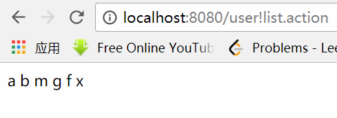
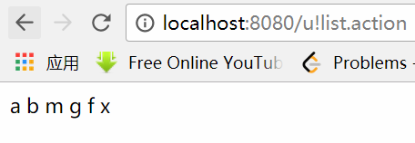
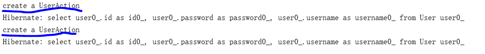
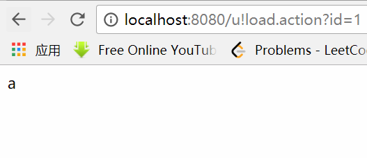
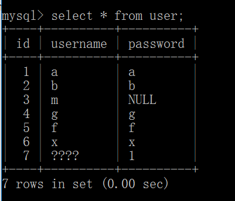
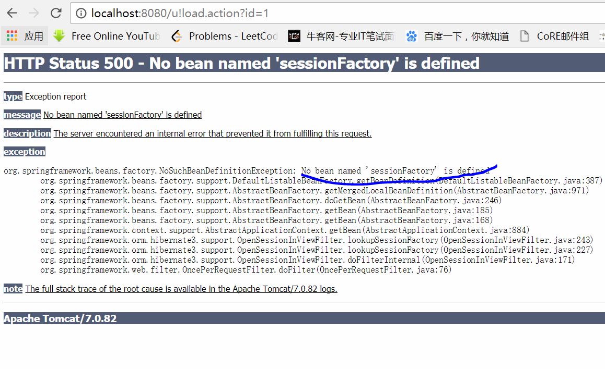
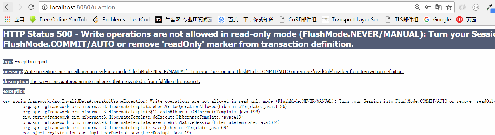
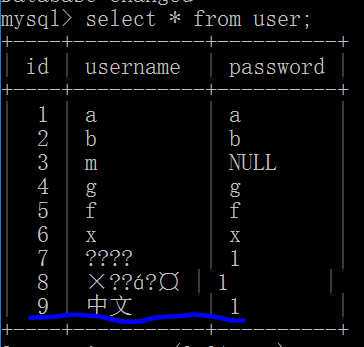
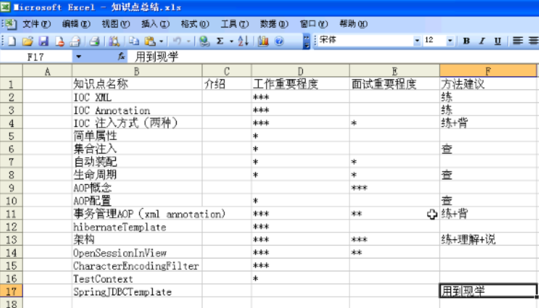
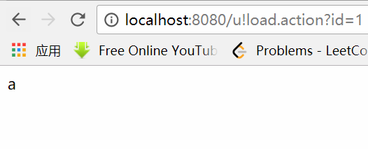

第四十三课. SSH整合之用户列表
前面我们已经成功将Spring、Hibernate和Struts2整合在了一起，下面我们就要利用这个架构来搞一些事情。
这一节，我们想要从数据库中将所有用户的username从数据库取出来，并且显示在jsp页面上面。
这里有两种编码的思维：
第一是从表现层开始，先把页面写出来，然后根据页面将Controller写出来，然后再写出来业务逻辑层，将和数据库打交道的代码写出来，一般新手是这么做的。
第二是从数据库一侧开始写，一步一步写到页面，一般有经验的老程序员这么做。
我们就按照新手的思想来实现这个小功能。
先考虑设计出一个展示用户的页面，给它起名叫做userlist.jsp：
然后我们在struts.xml中添加这个页面的配置：
修改UserAction我们采用struts2中的ModelDriven方式来接受参数：
这段代码里面，我们增加了
private List
这个成员变量以及其getter和setter方法，另外我们增加了一个list方法用来向struts2返回result：
这样struts.xml就会根据这个结果，返回userlist.jsp这个页面了。
接下来，我们就是需要向UserDao和UserManagerImpl中添加getUsers方法了：public List<User> getUsers();
然后我们需要在各自的实现中实现这个方法：
UserManagerImpl.java：
UserDao.java：
这样就实现了这个小功能，写个测试代码测试一下吧：
运行：

第四十四课. Spring_Plugin的详解-1
其实我们之前的实现有一个小问题，也不算bug，只是struts中的spring plugin里面的机制造成的小问题。现在我们来写一个小程序测试一下这个问题并试着解决它：
这一次我们试着根据id来load一个User并将其显示在前端页面上。这个看起来和上一节做法差不多。
写一个user.jsp：
struts.xml中加入：
在UserAction中加入User成员变量，添加getter和setter，并且加入load方法，用于返回result：
最后UserAction就是：
然后我们要像上一节一样，在UserDao、UsreManager以及其对应的实现中都加入load方法：
UserDao：
我们写好代码后，去运行一下：

发现报错了。为什么我们之前展示一系列用户没有问题，而这一次出错了？
原因就在Struts的Spring-plugin上，看一下文档：

看到文档里面autoWire是name，也就是struts的action是spring帮我们管理而且自动注入的，在set注入的时候，会自动按名字帮我们注入，那么看一下UserAction有哪些属性吧：
那么就是会把这些属性自动帮我们注入到UserAction里面，可以看到里面有一个属性叫做user，而我们在写UserAction的时候，上面有一个注解：
@Component(“user”)
这个和它本身的属性user重名了，那么在注入的时候就会将Action自己注入到自己本身，所以就报错了。
这个时候，我们的@resource也可以不写了，因为帮我们自动注入：
这样也会自动注入，所以这是plugin比较恶心的内部机制。
解决办法就是把@Component里面改个名字：
@Component(“u”)
然后把对应的struts.xml里面的配置也改个名字：
另外需要注意的就是我们之前给UserManager起名叫um，现在为了避免空指针异常，我们需要给其改名叫做userManager。
第四十五课. Spring_Plugin的详解-2-OpenSessionInView
其实我们上面一节中写UserAction时，有两个注解是多余的，就是
我们先去掉第一个注解，运行：
是可以的。
另外我们再实验多例，加入一个构造函数：
同时去掉@Scope(“prototype”)，运行两次：
看到控制台是打印了两次构造函数，说明其默认是多例模式。
另外需要明白的一个问题，其实Action的产生过程完全归Struts的spring插件管，我们做一个实验就明白了：
给UserManager的setter方法上加上@Resource注解并且乱起一个名字，运行后发现也是可以的。这说明，我们的Action的产生是完全归Struts的spring插件管，Spring只负责提供bean容器，也就是把注入的东西都写在beans.xml中，struts需要的时候在里面读就可以了。
如果想不让我们是的struts全权管理我们的Action，想用自己规定的名字，那么要不就把原来属性名字就起好，要不就在属性上面给它@Resource(name=”…”)
下面我们来解决上一节遗留的一个问题，就是我们在运行load方法的时候，会报错说我们no session，这个问题很容易想明白，就是我们在加载User的时候用的是load方法（UserDaoImpl）：
当我们在页面需要这个User的时候，Session已经关闭了。
如何解决这个问题呢？
一个是我们不采用load方法，采用get方法，但是这个方法带来的弊端也是明显的，之前在Hibernate涉及到这个问题，就是如果fetchType是Eager，那么会把相关联的所有类都加载出来。
所以我们采用另外一种思路，就是采用Spring给我们提供的一个api，使得session一直保存到页面关闭。
在web.xml中加入配置：
注意这个过滤器一定要配置在struts2的过滤器之前。
然后我们需要修改user.jsp：
运行：

成功从数据库中取出数据并正常显示。
再做一个实现，就是我们在注册页面注册一个中文用户，会出什么情况？
看看数据库：

乱码了。
第四十六课. 三个常见问题
第一个问题：
为什么要将openSessionInView的过滤器配置在struts2之前？
这是因为我们的过滤器是先进后出的栈模型（参见过滤器模式的设计模式笔记），所以如果设置在struts2之后，那么openSessionInView就不再起作用了。
第二个问题，就是如果我们在beans.xml中，将sessionFactory的bean的名字改成sf，那么openSessionInView运行会报错：

因为openSessionInView默认会去找这个名字的bean，如果执意要叫sf，那么就需要到web.xml中修改过滤器：
这样运行就可以了。
第三个问题：
如果我们去掉Transaction：
运行：

发现报错了，这个问题是：
我们如果去掉openSessionInView的filter，那么就没问题了，这是因为，如果我们去掉事务的配置，那么openSessionInView拦截到任何的调用，都会认为是只读的，所以当我们调用save方法，就会认为这个只读的，所以不允许插入数据库。
第四十七课. SSH整合之-中文问题
还是回到我们在四十五课出现的问题：
当我们在注册页面中写入中文时，数据库存入的是乱码。现在我们就来着手解决这个小问题。
我们先来看一下这个问题出在哪里，在UserAction的execute方法里面打印一句话：
再在注册页面注册，发现控制台输出就是乱码，说明在执行Action的时候就已经乱码。所以我们需要使用struts的转码方式，也就是在web.xml中加入一个转码的过滤器：
再运行，查看数据库：

OK了，已经将编码成功转成了GBK的了。

第四十九课. 补充Struts2-Spring2.5整合问题
前面说的我们在使用struts的spring plugin时，Action的产生过程是由Struts来全程管理，其实这个说法是错误的，其实我们可以通过配置struts.xml里面的class来让spring管理Action的生成：
这样我们在回到UserAction里面，加上@Component(name=”u”)的注解就可以了：
运行：

OK了。